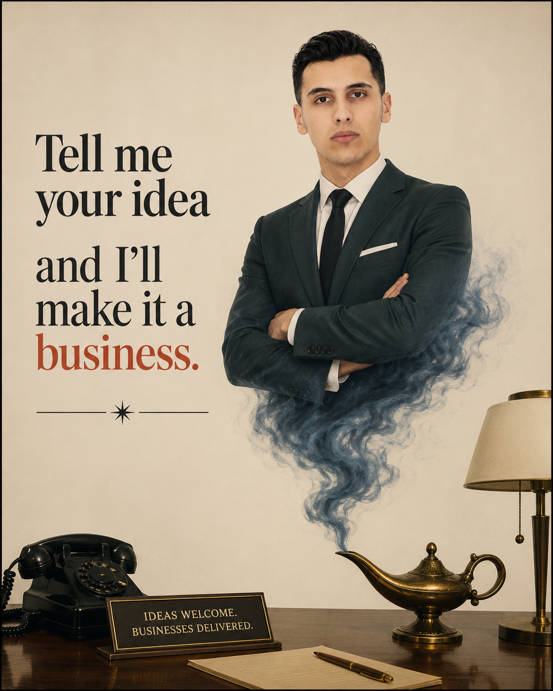

Academic & Professional Journey
Every degree, project and challenge shaped the way I think, build and solve problems.
Built a security-oriented web platform for a US client for over one year.
Bonus: project manager for our final year academic project.
Designed and installed many web and technical solutions for local businesses.
Deepened expertise in information systems engineering and learned how much of a currency informations and their preview systems are in todays world.
WORK
Building 2 companies in stealth mode. One of them is launching soon. Stay tuned 🤫
Continuing my studies, having a final year internship while building and learning new skills !

Got an idea? Tell me about it — let's see if we can turn it into a business.